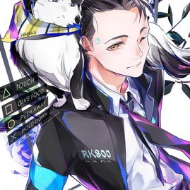

Bot multifonctions pour Discord
Connor est un bot multifonction pour Discord, pouvant ainsi tout faire ou presque. Comprenant non seulement des commandes diverses permettant une plus grande intéraction avec les membres des serveurs, il contient aussi des jeux, un lecteur de musique, un créateur de sondages, un ajout automatique de rôles et un créateur de meme. En plus de cela, il possède un module RPG qui intègre tout un nouveau pan de commandes, un système économique, des combats contre des monstres tout comme des joueurs, de nombreuses classes et de nombreux objets, dont des objets légendaires que vous trouverez sans doutes lors de vos aventures. Pour l'inviter sur votre serveur, cliquez ici.
Ses commandes sont divisées en 11 catégories:
| Nom | Description | Utilisation |
|---|---|---|
| Baleine | Envoie une baleine au hasard. | !baleine |
| Chat | Envoie un chat au hasard. | !chat |
| Chaton | Envoie un chaton au hasard. | !chaton |
| Chien | Envoie un chien au hasard. | !chien |
| Koala | Envoie un koala au hasard. | !koala |
| Lézard | Envoie un lézard au hasard. | !lezard |
| Oie | Envoie une oie au hasard. | !oie |
| Oiseau | Envoie un oiseau au hasard. | !oiseau |
| Panda | Envoie un panda au hasard. | !panda |
| Panda roux | Envoie un panda roux au hasard. | !pandaroux |
| Pikachu | Envoie un pikachu au hasard. | !pikachu |
| Raton laveur | Envoie un raton laveur au hasard. | !ratonlaveur |
| Renard | Envoie un renard au hasard. | !renard |
| Koala | Envoie un koala au hasard. | !koala |
| Nom | Description | Utilisation |
|---|---|---|
| 2D girls eating cutely | Envoie une image de r/2DGirlsEatingCutely. | !2Dgirlseatingcutely |
| Anime IRL | Envoie une image de r/anime_irl. | !animecitation |
| Avatar d'anime | Envoie un avatar d'anime. | !avataranime |
| Boisson anime | Envoie une image de r/animehotbeverages. | !boissonanime |
| Citation d'anime | Envoie une citation d'anime (en anglais). | !citationanime |
| Création de waifu | Envoie un site pour créer votre waifu. | !creerwaifu |
| Fan art | Envoie une image de r/AnimeART. | !fanart |
| Fond d'écran d'anime | Envoie un fond d'écran d'anime au hasard de reddit. | !fondecrananime |
| Formel anime | Envoie une image de r/formalwaifus. | !formelanime |
| Genetically Engineered Catgirls | Chaque dollar donné à ... | !gecg |
| Gif d'anime | Envoie une image de r/animegifs. | !gifanime |
| Holo | Envoie Holo de l'anime Spice & Wolf. | !holo |
| Jojo | Envoie un gif de Jojo au hasard provenant de Tenor. | !jojo |
| Jojo meme | Envoie un meme de Jojo au hasard. | !jojomeme |
| Kemonomimi | Envoie un kemonomimi au hasard. | !kemonomimi |
| Kimono | Envoie une image de r/AnimeGirlsInKimonos. | !kimono |
| Kitsune | Envoie une kitsune au hasard. | !kitsune |
| Megumin | Envoie une image de Megumin de l'anime Konosuba. | !megumin |
| Meme anime | Envoie un meme d'anime de reddit. | !memeanime |
| Moe | Envoie une image de r/awwnime. | !moe |
| Neko | Envoie une neko au hasard. | !nekogif |
| Nekogif | Envoie une neko au hasard. | !nekogif |
| Pixiv | Envoie une image de Pixiv au hasard. | !pixiv |
| Personnage random d'anime | Envoie la page d'un personnage d'anime/manga/light novel/visual novel au hasard. | !rdmanimeperso |
| Sauce | Envoie un site qui cherche la provenance d'une image donnée. | !sauce |
| Shinobu | Envoie une image de Shinobu de l'anime Bakemonogatari. | !shinobu |
| Someil anime | Envoie une image de r/sleepyanimegirls. | !sleepyanime |
| Streetmoe | Envoie une waifu au hasard. | !streetmoe |
| Waifu | Envoie un site qui cherche la provenance d'une image donnée. | !waifu |
| Nom | Description | Utilisation |
|---|---|---|
| Aide | Envoie une liste de commandes ou les informations d'une seule. | !aide |
| Binaire | Converti un texte en binaire. | !binaire |
| Binaire texte | Converti du binaire en texte. | !binairetexte |
| Citation | Envoie une citation de au hasard. | !citation |
| Dé | Lance un dé (à 6 faces si aucun argument n'est mit). | !de |
| Dit | Dit le message de l'utilisateur. | !dit |
| Emoji | Envoie un emoji. | !emoji |
| Fond d'écran | Envoie un fond d'écran au hasard de Wallpaper Abyss. | !fondecran |
| Giphy | Envoie un gif au hasard provenant de Giphy. | !giphy |
| Effectue une recherche google. | ||
| Hello world | Envoie un meme d'anime de reddit. | !memeanime |
| Inversion de texte | Inverse un texte. | !inversiontexte |
| Météo | La météo partout dans le monde. | !meteo |
| Ping | La partie de ping pong la plus longue du monde. | !ping |
| Pile ou face | Pile ou Face. | !pof |
| Politique | Envoie des sites de diagnostique pour déterminer votre idéologie politique. | !politique |
| Pokémon random | Envoie la page d'un pokémon du pokédex au hasard. | !rdmpokemon |
| Tenor | Envoie un gif au hasard provenant de Tenor. | !tenor |
| Nom | Description | Utilisation |
|---|---|---|
| 8ball | La réponse à une question existentielle par une machine. | !aide |
| Blague | Envoie une blage (en anglais). | !blague |
| Dank | Envoie une image de r/dank. | !dank |
| Holup | Envoie une image de r/holup. | !holup |
| Howgay | Envoie le pourcentage de gay-itude d'une personne. | !howgay |
| Waifu legale | Vérifie que votre waifu est légale. | !legal |
| Ma waifu | Diagnostique pour déterminer votre waifu. | !mawaifu |
| Meme | Envoie un meme au hasard de reddit. | !meme |
| Meme historique | Envoie un meme historique au hasard de reddit de r/HistoryMemes. | !memehistorique |
| Moi IRL | Envoie une image de r/me_irl. | !moiirl |
| Russie | Envoie une image de r/ANormalDayInRussia. | !russie |
| Star Wars | Envoie un gif de Star Wars au hasard provenant de Tenor. | !starwars |
| Meme de Star Wars | Envoie un meme au hasard de Star Wars. | !starwarsmeme |
| Trump | Envoie un message de la part de Trump. | !trump |
| Nom | Description | Utilisation |
|---|---|---|
| Canvas | Envoie une carte avec le rang des anciens. | !canvas |
| Information | Envoie les informations d'un utilisateur. | !information |
| Magasin de Canvas | Magasin de canvas. | !magasincanvas |
| Modification de Canvas | Modifie le canvas utilisé. | !modifiercanvas |
| Serveur | Envoie les informations du serveur. | !serveur |
| Sondage | Envoie un sondage. | !sondage |
| Top par économie | Classement des membres selon leur argent. | !topeco |
| Top par expérience | Classement des membres selon leur expérience de Rang des Anciens. | !topexp |
| Top par expérience dans le RPG | Classement des membres selon leur expérience dans le module rpg. | !toprpg |
| Nom | Description | Utilisation |
|---|---|---|
| Cartes | Envoie le site mapgenie.io. | !cartes |
| Demineur | Arriverez-vous à passer ce champ de mines ? | !demineur |
| Base de donnée Genshin Impact | Envoie le site Gensh.in. | !genshindb |
| Carte Genshin Impact | Envoie le site genshin-impact-map.appsample.com. | !genshinmap |
| Stats Genshin Impact | Envoie le site genshinimpactcalculator.com | !genshinstats |
| Tier list Genshin Impact | Envoie le site Genshin.gg. | !genshintierlist |
| Morpion | Jouer au morpion avec un ami. | !morpion |
| Pendu | Ne finissez pas au bout de la corde. | !pendu |
| Pierre feuille ciseaux | Pierre, feuille, ciseaux. | !pfc |
| Pierre feuille ciseaux lézard spock | Une version avancée du Pierre, feuille, ciseaux avec lézard et spock. | !pfcls |
| Nom | Description | Utilisation |
|---|---|---|
| Alerte rouge | ALERTE ALERTE LE SERVEUR SUBIT UNE ATTAQUE DE GRANDE AMPLEUR ! | !alerterouge |
| Rôles automatiques | Crée un message pour s'ajouter des rôles automatiquement. | !autorole |
| Censure | Supprime les messages. | !censure |
| Config | Modifie la BDD. | !config <prefixe> |
| Mute | Mute une personne pendant un temps donné. | !mute |
| Retour | Envoie un message au créateur du Bot. | !retour |
| Nom | Description | Utilisation |
|---|---|---|
| Boucle | Fait répéter la musique indéfiniment jusqu'à la réutilisation de cette commande. | !boucle |
| Filtre | Ajoute un filtre sur la musique. | !filtre |
| Information sur la musique | Affiche le nom de la musique jouée et sa progression. | !infomusique |
| Jouer | Joue une musique choisie dans un salon vocal. | !jouer |
| Liste de filtres | Affiche la liste de tout les filtres du bot. | !listefiltre |
| Mélange | Mélange la file d'attente des musiques. | !melange |
| Paroles | Envoie les paroles d'une chanson. | !paroles |
| Pause | Met en pause la musique jouée. | !pause |
| Queue | Affiche la file d'attente des musiques. | !queue |
| Reprendre | Reprend la musique mise en pause. | !reprendre |
| Sauter | Saute la musique jouée. | !sauter |
| Stop | Arrête la musique jouée. | !stop |
| Vider la queue | Vide la file d'attente de musique. | !viderqueue |
| Volume | Change le volume de la musique. | !volume |
| Nom | Description | Utilisation |
|---|---|---|
| Dictateur | Envoie un dictateur au hasard. | !dictateur |
| Hentai | Envoie une image de hentai. (Je ne suis pas responsable de ce contenu) | !hentai |
| Nom | Description | Utilisation |
|---|---|---|
| Combat | Combat avec un ennemi ou un autre joueur. | !combat |
| Début RPG | Créez votre personnage. | !debutrpg |
| Déséquiper | Déséquipe un objet sur votre personnage. | !desequiper |
| Equiper | Equipe un objet sur votre personnage. | !equiper |
| Magasin | Magasin du RPG. | !magasin |
| Profil | Profil du personnage l'utilisateur. | !profil |
| Nom | Description | Utilisation |
|---|---|---|
| Baka | Baka ! | !baka |
| Bonk | Frapper une personne. | !bonk |
| Câlin | Un câlin pour vous réconforter. | !calin |
| Caresser | Caresser une personne. | !caresser |
| Cc | Cc. | !cc |
| Chatouiller | Chatouiller une personne. | !chatouiller |
| Clin d'œil | Faites un clin d'œil. | !clindoeil |
| Creer une image | Créer un meme avec les paramètres entrés. | !creerimage |
| Danser | Dancez ! Si vous savez... | !danser |
| Embrasser | Embrasser une personne. | !embrasser |
| Facepalm | Faire une facepalm. | !facepalm |
| Gifler | Gifler une personne. OwO | !clindoeil |
| Grimacer | Exprimez votre dégout ! | !grimacer |
| Heureux | Exprimez votre joie ! | !heureux |
| Highfive | Highfive avec une personne ! | !highfive |
| Lécher | Lécher une personne. | !lecher |
| Malmener | Malmener une personne. OwO | !malmener |
| Manger | Mangez quelque chose ! | !manger |
| Mordre | Mordre une personne ! | !mordre |
| Nourrir | Nourrir une personne. | !nourrir |
| Owoifier | OwO-ifie un message. | !owoifier |
| Pat | Trop mignon ! | !pat |
| Pleurer | Pleurer. | !pleurer |
| Poke | Tapote légerement une personne. | !poke |
| Projeter | Projeter une personne. | !projeter |
| Rougir | Rougir. | !rougir |
| Satisfait | Vous êtes satifait, quelle satisfaction. | !satisfait |
| Salut | Dites bonjour ! | !salut |
| Sourir | Faites votre plus beau sourir ! | !sourir |
| Tenir la main | Tenez la main de quelqu'un ! | !tenirmain |
| Tg | Tg à la personne mentionnée. | !tg |
| Tg Clem | Tg Clem. | !tgclem |
| Tuer | Tuez une personne ! | !tuer |
| Nom | Description | Utilisation |
|---|---|---|
| Patreon | Envoie mon patreon. | !patreon |
| Site | Envoie mon site internet. | !site |
| Youtube | Envoie ma chaine Youtube. | !youtube |
J'ai pendant longtemps voulu créer mon propre bot Discord, ayant vu à quel points ceux-ci étaient utiles et pratiques à utiliser. Cette idée à germé vers 2019, alors que je cherchais à améliorer l'expérience utilisateur sur mon serveur avec mes amis. Je n'ai cependant pas eu le temps de commencer cette année là et ai commencé le développement pendant les vacances d'été 2020. J'ai décidé à ce moment de l'appeler Connor, en référence à Connor de Detroit: Become Human (c'est aussi pour ça que la version 1.0.0 s'appelle Hank). Par pure coïncidence, un ami a lui aussi commencé à créer son bot la même semaine. Cependant, le temps que j'y ai investi était bien plus grand. Alors que mon ami avançait avec quelques heures par jour maximum, j'ai passé toutes mes journées à coder, au minimum douze heures par jour, entre midi et une, voire deux heures du matin. Le décalage s'est vite fait ressentir et au bout d'une semaine de travail acharné j'avais déjà crée une vingtaine de commandes, certes peu complexes, mais suffisantes pour que je puisse être fier du travail accompli. Après cette semaine de dur labeur, j'ai codé un peu moins, il fallait que je reprenne des forces. Malheureusement, alors que je voulais reprendre le codage intesif, je fus obligé d'aller chez mon grand-père quelques jours, ce qui coupa mon élan et que je ne pus pas rattraper, car devant ensuite préparer d'autres choses.
J'ai fini par coder mon bot pendant mon temps libre en période scolaire ou alors pendant les vacacances. Ce fut plutôt compliqué car c'était l'année de mon bac, ce qui m'a fait perdre des heures importantes de révision et, je l'accorde, j'aurais dû ne pas coder mon bot à ce moment et me concentrer sur mes études. Malgré ça, je me suis bien amusé à coder des choses de plus en plus complexes et c'est là que j'ai codé les points les plus ambitieux de ce projet. J'ai rencontré des difficultés, notamment sur les commandes de classement et de rôles automatiques car je ne savais pas trop utiliser les réactions à ce moment. Ces problèmes sont restés sur la touche pendant quelques mois, j'ai codé d'autres commandes plus faciles et pensé mon RPG et ses mécaniques pour ne pas rester bloquer sur ces problèmes alors que les examens approchaient. Je m'étais dis qu'il valait mieux que je crée des commandes plus faciles qui soient utilisées, comme un créateur de meme, plutôt que de coder un classement pour un RPG qui n'existait pas encore, et qui me prendrait beaucoup de temps que je n'avais pas. C'est aussi à la fin de cette année que j'ai décidé d'écrire une feuille de route ainsi que les détails de chaques mises à jour pour me permettre de mieux structurer ce projet et me permettre de me rendre compte de l'avancement de celui-ci. Enfin est venu la création du module RPG. C'était peut-être l'épreuve la plus éprouvante de ce projet. En fait, la difficulté de ce module réside dans le fait que c'est un ensemble. Là où les autres catégories n'avaient que des commandes indépendantes les unes des autres, ce module avait besoin de nombreuses commandes pour permettre un résultat global. Coder le système de jeu, implémenter les ennemis, les classes, les capacités, toutes ces choses m'ont prit du temps. Heureusement, mes amis m'ont aidé à trouver de nombreuses idées pour rendre le gameplay plus agréable et créer de nombreuses compétences.
C'est ainsi que j'ai continué à coder ce bot et qu'il est arrivé à ce stade de développement. Je continuerais de le mettre à jour régulièrement et j'espère que vous apprécierez ou alors que vous appréciez utiliser Connor !